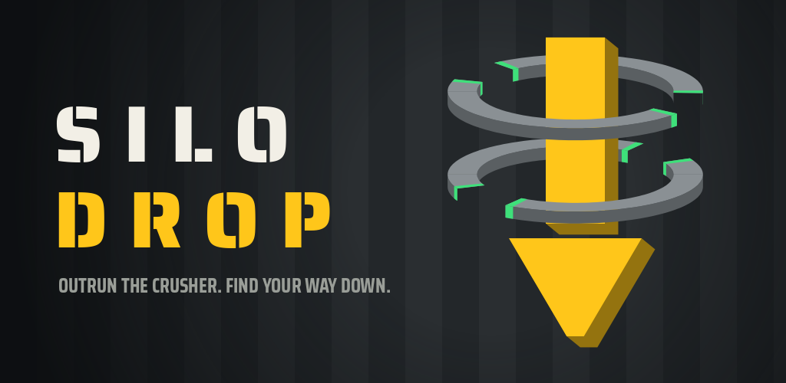

SILO DROP
Outrun the crusher. Find your way down.
A runner drops down an endless silo, one ledge at a time, while a tunnel boring machine grinds down after it. Tap to jump, tap again in the air to dash, swipe back to turn, swipe down to slide. Find the gap, drop through, and keep ahead of the teeth.

Made with Godot. No accounts, no sign-in, plays offline.